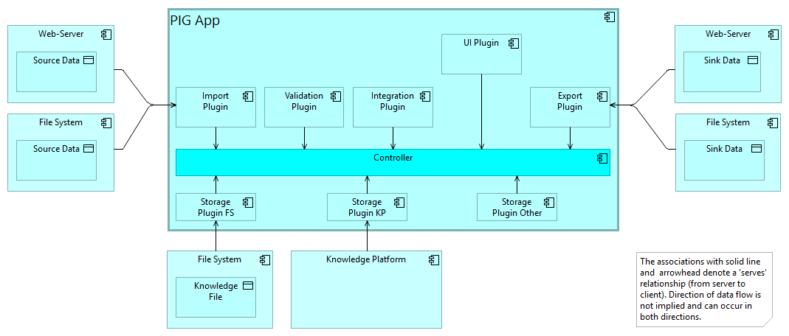

| Element Type | Outline |
| Element Type | Model Diagrams, Diagrams, Plans |
The top-level module architecture of the PIG App embedded in its sytem context.

| Element Type | Model Diagram |
| Notation | Application Structure |
| Element Type | Model Elements (Glossary) |
The controller is the 'main' component and is in charge of managing the execution of requested services in reaction on user or server events. In the most easiest case ES promises are used and the scheduling is left to the event queuing of the execution environment. But certain services may require coordination or user feedback (via spinner or log message, for example). So it is the responsibility of the controller to enable and disable elements creating events to maintain the integrity of the app and the data.
Is usually provided by the application framework. An option is to implement an event dispatcher controlled by a state-machine.
| Element Type | Application Component |
| ▣ Module Architecture | shows | □ Controller |
| □ PIG App | ArchiMate:Composition | □ Controller |
| □ Storage Plugin FS □ Storage Plugin KP □ Storage Plugin Other □ Validation Plugin □ Import Plugin □ Integration Plugin □ UI Plugin □ Export Plugin | serves | □ Controller |
Transforms a selected subgraph from the internal data format according to the PIG metamodel to a desired output format such as JSON-LD, RDF, GQL, HTML, DOCX or PDF.
| Element Type | Application Component |
| ▣ Module Architecture | shows | □ Export Plugin |
| □ PIG App | ArchiMate:Composition | □ Export Plugin |
| □ Web-Server □ File System | serves | □ Export Plugin |
| □ Export Plugin | serves | □ Controller |
Consider to use
| Element Type | Application Component |
| ▣ Module Architecture | shows | □ File System |
| □ File System | accesses, stores | ○ Knowledge File ○ Source Data ○ Sink Data |
| □ File System | serves | □ Storage Plugin FS □ Import Plugin □ Export Plugin |
| □ File System | contains | ○ Knowledge File ○ Source Data ○ Sink Data |
Transforms a source data format such as ReqIF, XMI, STEP or FMI/SSP to the internal data format according to the PIG metamodel.
| Element Type | Application Component |
| ▣ Module Architecture | shows | □ Import Plugin |
| □ PIG App | ArchiMate:Composition | □ Import Plugin |
| □ Web-Server □ File System | serves | □ Import Plugin |
| □ Import Plugin | serves | □ Controller |
Integrates a new subgraph with the existing graph, e.g. by combining nodes representing the 'same' artifact. Two artefacts are considered the same, if class and title are equal. A preliminary decision has been taken to keep the original nodes and to create an 'umbrella' node pointing to two or more nodes of the same artifact.
| Element Type | Application Component |
| ▣ Module Architecture | shows | □ Integration Plugin |
| □ PIG App | ArchiMate:Composition | □ Integration Plugin |
| □ Integration Plugin | serves | □ Controller |
A subgraph represented as RDF/Turtle or JSON-LD.
| Element Type | Data Object |
| ▣ Module Architecture | shows | ○ Knowledge File |
| □ File System | accesses, stores | ○ Knowledge File |
| □ File System | contains | ○ Knowledge File |
Consider to use a backend with:
| Element Type | Application Component |
| ▣ Module Architecture | shows | □ Knowledge Platform |
| □ Knowledge Platform | serves | □ Storage Plugin KP |
A web application for creating, reading, updating and deleting data elements per class. The app is configured by the classes loaded at initialization time. The classes govern the choice and the dialog layout for modifying the data. Thus, the same software is used for more or less complex applications. In this case, the PIG Editor is used both for defining the application ontology and the application data.
The architecture includes a plugin mechanism to allow the deployment of new transformations or storage adapters without building and deploying a complete new image, for details see the issue 'Design Plugin Mechanism'.
Details of the development, build, integration and deployment environment are discussed in issue 'Select Development Environment and Programming Language'.
Further
| Element Type | Application Component |
| ▣ Module Architecture | shows | □ PIG App |
| □ PIG App | ArchiMate:Composition | □ Controller □ Storage Plugin KP □ Storage Plugin FS □ Storage Plugin Other □ Export Plugin □ Import Plugin □ Integration Plugin □ UI Plugin □ Validation Plugin |
| Element Type | Data Object |
| ▣ Module Architecture | shows | ○ Sink Data |
| □ Web-Server □ File System | accesses, stores | ○ Sink Data |
| □ Web-Server □ File System | contains | ○ Sink Data |
| Element Type | Data Object |
| ▣ Module Architecture | shows | ○ Source Data |
| □ File System □ Web-Server | accesses, stores | ○ Source Data |
| □ Web-Server □ File System | contains | ○ Source Data |
Store a subgraph in or retrieve it from a file system.
| Element Type | Application Component |
| ▣ Module Architecture | shows | □ Storage Plugin FS |
| □ File System | serves | □ Storage Plugin FS |
| □ Storage Plugin FS | serves | □ Controller |
| □ PIG App | ArchiMate:Composition | □ Storage Plugin FS |
Store a subgraph in or retrieve it from a knowledge platform.
| Element Type | Application Component |
| ▣ Module Architecture | shows | □ Storage Plugin KP |
| □ Knowledge Platform | serves | □ Storage Plugin KP |
| □ Storage Plugin KP | serves | □ Controller |
| □ PIG App | ArchiMate:Composition | □ Storage Plugin KP |
Store a subgraph in or retrieve it from any other storage system as required.
| Element Type | Application Component |
| ▣ Module Architecture | shows | □ Storage Plugin Other |
| □ PIG App | ArchiMate:Composition | □ Storage Plugin Other |
| □ Storage Plugin Other | serves | □ Controller |
User Interface, such as
The user-interface is class-driven, i.e.the details of the entity, relationship or organizer classes with their respective property classes determine the UI. For example, an editing form for a class with three property classes will have 3 fields expecting input according to its dataype and range. Or a graphical editor for a UML interaction diagram will will present a tailored pallette with drawing rules for interaction diagrams.
| Element Type | Application Component |
| ▣ Module Architecture | shows | □ UI Plugin |
| □ PIG App | ArchiMate:Composition | □ UI Plugin |
| □ UI Plugin | serves | □ Controller |
Validates a package or a collection of packages, with
| Element Type | Application Component |
| ▣ Module Architecture | shows | □ Validation Plugin |
| □ PIG App | ArchiMate:Composition | □ Validation Plugin |
| □ Validation Plugin | serves | □ Controller |
| Element Type | Application Component |
| ▣ Module Architecture | shows | □ Web-Server |
| □ Web-Server | accesses, stores | ○ Source Data ○ Sink Data |
| □ Web-Server | serves | □ Import Plugin □ Export Plugin |
| □ Web-Server | contains | ○ Source Data ○ Sink Data |